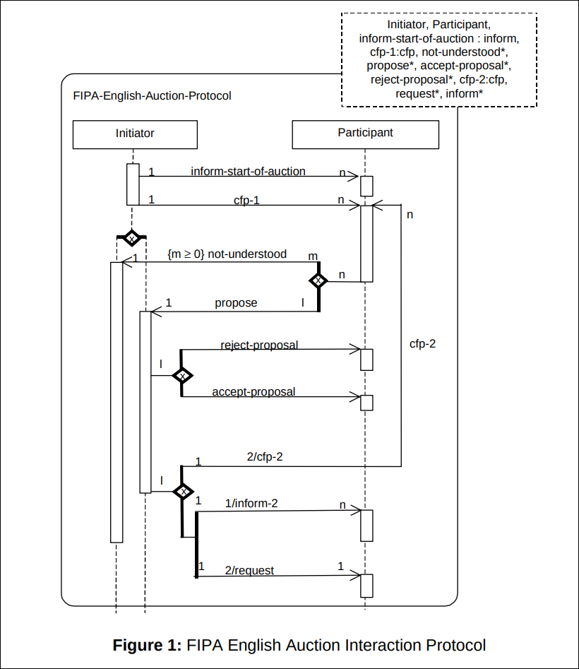
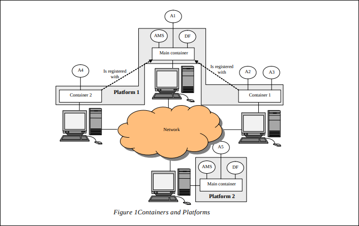
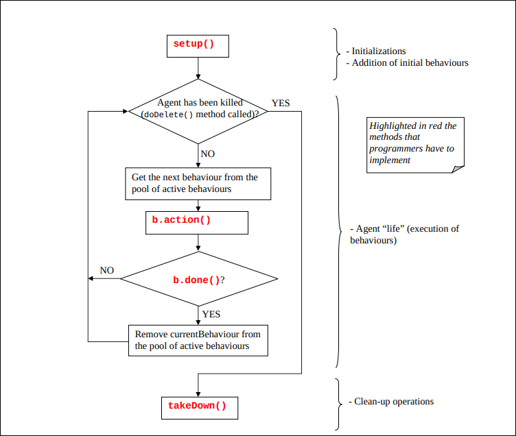

Agentes
Nota
La cantidad de relleno que hay en este tema es histórico y mira que intenté quitar la mayor cantidad de mierda posible.
8.1 ¿Qué es un Agente? (Conceptos Básicos)
Imagina un mayordomo digital. A diferencia de un programa normal (como una calculadora) que espera a que tú le des órdenes paso a paso, el mayordomo sabe qué quieres y actúa por su cuenta para conseguirlo.
Definición Clave: Un agente es un sistema informático situado en un entorno, capaz de realizar acciones de forma autónoma y flexible para cumplir los objetivos de su "dueño" (usuario).
Diferencia principal con el software tradicional
- Objeto/Programa normal: "¿Qué hago ahora?" (Es pasivo, espera órdenes).
- Agente: "¿Qué necesito hacer para conseguir mi meta?" (Es activo, toma decisiones).
8.2 Características Fundamentales
Para que un programa sea considerado un "Agente", debe cumplir estas propiedades (especialmente las tres primeras):
-
Autonomía (La más importante): Opera sin intervención directa. Tiene control sobre su estado interno y sus acciones.
-
Reactividad: Percibe su entorno y responde a cambios rápidamente (ej: si un robot ve una pared, frena).
-
Proactividad (Iniciativa): No solo reacciona; toma la iniciativa para cumplir objetivos a largo plazo (ej: un agente de bolsa que compra acciones porque predice una subida, no solo porque el precio cambió hace un segundo).
-
Habilidad Social: Interactúa con otros agentes o humanos (coopera, negocia o compite).
-
Movilidad: El agente tiene la capacidad de viajar de nodo en nodo de la red preservando su estado
8.3 El Entorno
El entorno es "el mundo" donde vive el agente.
Clasificar el entorno es vital porque determina la dificultad de diseñar el agente. Cuanto más difícil es el entorno, más inteligente debe ser el agente.
| Propiedad del Entorno | Definición Sencilla | Ejemplo Fácil (Ajedrez) | Ejemplo Difícil (Conducir un Taxi) |
|---|---|---|---|
| Accesibilidad | ¿El agente puede ver TODO el escenario? | Totalmente Accesible: Ves todo el tablero. | Inaccesible: No ves qué hay tras la esquina o qué piensan otros conductores. |
| Determinismo | Si hago una acción, ¿el resultado es 100% seguro? | Determinista: Si muevo el peón, se queda ahí. No hay azar. | No Determinista (Estocástico): Si giro el volante, puede que el coche patine si hay aceite. Hay incertidumbre. |
| Episodicidad | ¿Lo que hice antes afecta a lo que hago ahora? | Secuencial (No episódico): Un mal movimiento al inicio afecta el final del juego. | Episódico: Identificar fotos defectuosas en una cadena de montaje (la foto anterior no afecta a la actual). |
| Dinamismo | ¿El mundo cambia mientras el agente "piensa"? | Estático: El tablero no se mueve hasta que tú mueves. | Dinámico: Mientras decides si frenar, el coche de delante sigue avanzando. |
| Continuidad | ¿Las opciones son finitas o infinitas? | Discreto: Hay un número fijo de casillas y movimientos. | Continuo: La velocidad y el ángulo del volante tienen infinitos valores posibles. |
Resumen: El entorno más difícil es Inaccesible, No determinista, Dinámico y Continuo (como el mundo real). El más fácil es Accesible, Determinista, Estático y Discreto (como un puzzle).
8.4 Arquitecturas de Agentes
La arquitectura es el "cerebro" del agente. Define cómo pasa de Percibir (sensores) a Actuar (actuadores). Las ordenamos de la más "tonta" a la más compleja.
A. Arquitecturas Reactivas (Estímulo-Respuesta)
Son como insectos. No "piensan" ni tienen memoria compleja.
-
Funcionamiento: Si ocurre X, haz Y.
-
Ventaja: Son rapidísimos.
-
Desventaja: No pueden planificar a futuro. Si el entorno cambia de forma que sus reglas no cubren, fallan.
-
Ejemplo: Un termostato (Si T < 20º
Encender calefacción). -
Subsunción (Rodney Brooks): Es un tipo famoso de arquitectura reactiva organizada en capas de comportamientos simples (ej: evitar obstáculos) que, al sumarse, crean un comportamiento complejo (caminar).
B. Arquitecturas Basadas en Lógica (El enfoque purista)
Es el modelo teórico clásico. El agente funciona como un matemático: todo lo que percibe lo convierte en fórmulas para "demostrar" qué acción debe tomar.
-
Funcionamiento: Su "cerebro" es una base de datos de conocimiento lógico.
- Representación: Usa Lógica de Primer Orden para describir el estado del mundo.
- Deducción: Usa reglas lógicas para deducir qué acción realizar.
-
El Ciclo Lógico (Formal): El agente usa tres funciones matemáticas clave:
: Transforma lo que ven los sensores ( ) en una percepción ( ). : Actualiza su base de datos interna ( ) combinando lo que ya sabía con la nueva percepción. : Consulta su base de datos y decide lógicamente qué acción ( ) ejecutar.
-
Ventajas:
- Elegancia: Es una representación muy clara, limpia y formal.
-
Desventajas:
- Lentitud extrema: La deducción lógica tiene una complejidad temporal muy alta.
- Abstracción difícil: Es muy complicado traducir el mundo real (que es caótico) a símbolos lógicos perfectos.
C. Arquitecturas Deliberativas
Son como filósofos o jugadores de ajedrez.
-
Funcionamiento: Tienen un modelo simbólico del mundo (un mapa mental). Antes de actuar, razonan lógicamente para buscar un plan que les lleve a su meta.
-
Ventaja: Pueden resolver problemas complejos y explicar por qué hicieron algo.
-
Desventaja: Son lentos. En entornos de tiempo real (dinámicos), pueden quedarse "pensando" mientras el mundo cambia y los atropella.
D. Arquitectura B.D.I. (Belief, Desire, Intention)
Es la arquitectura deliberativa más famosa porque imita el razonamiento humano práctico.
- Creencias (Beliefs): Lo que el agente sabe o cree saber del mundo (Información).
- Deseos (Desires): Lo que el agente quiere conseguir (Metas posibles).
- Intenciones (Intentions): Los deseos por los que ha decidido actuar ahora mismo (Plan actual).
- El dilema del BDI:
- Agente Audaz: Elige un plan y lo sigue ciegamente hasta terminar o fallar. (Rápido, pero terco).
- Agente Cauto: Para a cada paso para ver si el plan sigue siendo válido. (Seguro, pero muy lento).
E. Arquitecturas Híbridas (Lo mejor de ambos mundos)
La mayoría de sistemas modernos usan esto. Combinan una parte reactiva (para reflejos rápidos) y una deliberativa (para planes a largo plazo).
Se organizan en Capas:
- Capas Horizontales: Todas las capas tienen acceso a los sensores y actuadores.
- Problema: Necesitas un "árbitro" central que decida a qué capa hacer caso si se contradicen (Cuello de botella).
- Capas Verticales: La información pasa como una cadena de mando.
- Problema: Si una capa falla, se rompe toda la cadena.
8.5 Sistemas Multiagente (Sociedades)
Cuando juntamos varios agentes, pasamos de diseñar individuos a diseñar sociedades. Aquí surgen conceptos clave:
- Heterogeneidad: Agentes distintos trabajando juntos (ej: un agente busca vuelos, otro reserva hoteles).
- Cooperación vs. Competición: ¿Trabajan juntos para un fin común (equipo de fútbol) o compiten por recursos limitados (subasta)?
- Comunicación: Necesitan un lenguaje común para negociar o delegar tareas.
La principal diferencia entre los sistemas multiagente y las redes P2P es la homogeneidad, el nivel de autonomía e inteligencia. EN una red P2P los nodos que intervienen son todos homogéneos, su comportamiento es rígido y reactivo, todos los nodos realizan las mismas funciones y colaboran entre sí. Por el otro lado, los agentes son heterogéneos , cada uno se especializa en realizar una tarea o función y puede competir o colaborar con otros agentes. Además su comportamiento es proactivo y autónomo, no solo reactivo.
¿Por qué usar Agentes? (Utilidad)
Son ideales para sistemas donde no hay un control centralizado o el problema es muy grande y cambiante.
- Escalabilidad: Puedes añadir más agentes si hay más trabajo.
- Robustez: Si un agente falla, los otros pueden seguir trabajando.
- Abstracción: Es más natural modelar un mercado con "agentes compradores y vendedores" que con un código monolítico gigante.
8.6 Comunicación entre Agentes
A diferencia de los objetos (que invocan métodos), los agentes se comunican para negociar, cooperar y delegar. No se trata solo de mover datos, sino de provocar una reacción o un cambio en el otro.
8.6.1 Teoría de los Actos del Habla (La Base Teórica)
La comunicación de agentes se basa en la idea de que "decir algo es hacer algo". El mensaje no es solo información, lleva una intención.
Se divide en tres dimensiones:
- Locución: El acto físico de emitir el mensaje (decir la frase).
- Ilocución (La más importante): La intención real del mensaje. ¿Es una orden? ¿Una promesa? ¿Una pregunta? Esto define el "Performative".
- Perlocución: El efecto que se logra en el receptor (convencer, asustar, informar).
Clasificación de la Intención (Ilocución)
- Asertivas: Informar sobre hechos ("El cielo es azul").
- Directivas: Intentar que el receptor haga algo ("Cierra la puerta", "¿Qué hora es?").
- Comisivas: Comprometerse a hacer algo ("Prometo ir mañana").
- Permisivas/Prohibitivas: Dar o quitar autorizaciones.
- Declarativas: Cambian la realidad con solo decirlo ("Os declaro marido y mujer").
- Expresivas: Muestran estado emocional ("Estoy cansado").
Objetivo del diseño: Se busca completitud (poder decir todo lo necesario), simplicidad (que no sea imposible de programar) y concisión (evitar ambigüedad).
8.6.2 La "Pila" de Comunicación
Para que dos agentes se entiendan, deben coincidir en varios niveles, de abajo a arriba:
Nivel 1: Transporte y Conexión (¿Cómo llega el mensaje?)
Es la tubería física. Los agentes no se preocupan de los bytes, delegan en un Servicio de Transporte.
- Mecanismos: Puede ser síncrono (espero respuesta) o asíncrono (envío y sigo trabajando). Puede ser a uno (Unicast), a varios (Multicast) o a todos (Broadcast).
- Tecnologías: CORBA, RMI, DCOM.
- Funciones: Garantizar que el mensaje llega, detectar errores y manejar las direcciones (nombres) de los agentes.
Nivel 2: Lenguaje de Comunicación (ACL)
Es la sintaxis. Define la estructura del mensaje para que sea comprensible.
- Estándares: FIPA-ACL (el más usado) o KQML.
- Requisito clave: Debe ser formal y tener una semántica bien definida.
Info
Un estándar es simplemente un conjunto de reglas acordadas que todo el mundo decide seguir para que cosas diferentes puedan funcionar juntas.
Por ejemplo los enchufes de las paredes, en Europa todos acordaron usar dos clavijas redondas. Eso es un estándar. Si cada fabricante de neveras hiciese un enchufe diferente sería un puto caos. En agentes necesitas estándares para que un agente programado en Java por una empresa en España pueda hablar con un agente programado en Python por una empresa en Japón.
Info
FIPA (Foundation for Intelligent Physical Agents) es la organización que escribe esos estándares. Es como la FIFA en fútbol, no juega los partidos, pero escribe el reglamento. La FIPA dice: "así es como debe hablar una gente para que el resto del mundo lo entienda".
Info
ACL (Agent Communication Language) es el lenguaje estándar que inventó FIPA. Pero no se refiere al idioma, sino a la estructura del mensaje. Piensa en un formulario oficial o en el sobre de una carta. ACL define los campos obligatorios para que el mensaje sea válido, independientemente de lo que quieras decir.
Nivel 3: Ontologías (El Vocabulario)
Los agentes no tienen "sentido común". Si el Agente A le pide al Agente B: "Tráeme un gato", hay un problema grave de ambigüedad.
- ¿Se refiere a un animal (mascota)?
- ¿Se refiere a una herramienta (para levantar el coche)?
La Ontología es la solución a este problema. Es una especificación formal y explícita de un vocabulario compartido. Define QUÉ significan las palabras en un contexto concreto y cómo se relacionan entre sí.
Para que dos agentes se entiendan, ambos deben acordar usar la misma ontología (el mismo diccionario) antes de hablar.
Ejemplo práctico:
-
Sin Ontología:
- Agente A: "Envía planta".
- Agente B: (Confuso) "¿Una flor o una fábrica?"
-
Con Ontología de Botánica:
- La ontología define:
Plantaes unSer Vivoque realiza fotosíntesis. - Agente A: "Envía planta (Ontología: Botánica)"
- Agente B: "Entendido, enviando un ficus".
- La ontología define:
-
Con Ontología Industrial:
- La ontología define:
Plantaes unEdificiodonde se manufacturan bienes. - Agente A: "Envía planta (Ontología: Industrial)".
- Agente B: "Entendido, enviando planos de la fábrica de Ford".
- La ontología define:
Resumen: La ontología da semántica (significado real) a los datos. Sin ella, los agentes solo se pasan palabras vacías.
Nivel 4: Protocolos de Interacción (La Conversación)
Son patrones predefinidos de mensajes. No basta con enviar una frase, hay que saber qué se espera después. (Ej: Si pregunto, espero una respuesta).
8.6.3 El Estándar FIPA-ACL
Es el estándar de facto para la comunicación de agentes. Un mensaje FIPA tiene una estructura "tipo sobre de carta" que incluye:
- Performative: El tipo de acto (REQUEST, INFORM, AGREE).
- Sender / Receiver: Quién envía y quién recibe.
- Content: El contenido real de la comunicación.
- Language & Ontology: Qué idioma y diccionario se usan para entender el contenido.
- Protocol: A qué conversación pertenece esto.
Requerimientos para ser un Agente FIPA
- Manejo de errores: Si recibes un mensaje que no entiendes, debes responder con
not-understood. Nunca ignorarlo silenciosamente. - Fidelidad: Si usas un acto comunicativo estándar (ej:
INFORM), debes cumplir estrictamente su definición oficial. - Flexibilidad: No estás obligado a implementar todos los protocolos, solo el subconjunto que necesites.
8.6.4 Protocolos FIPA (Patrones de Conversación)
Los protocolos definen el "baile" de mensajes entre agentes. Un protocolo es el patrón de comportamiento esperado en una conversación. No basta con enviar un mensaje, hay que saber qué respuesta esperar y en qué orden. Los más importantes son:
A. Protocolos Básicos (Petición e Información)
- FIPA-Query: Para preguntar. (
query-ifpara sí/no,query-refpara obtener un dato concreto). - FIPA-Request: Ordenar a otro que haga algo. El otro puede aceptar (
agree) o rechazar (refuse). - FIPA-Request-When: Como el anterior, pero la acción se hace solo cuando se cumple una condición futura.
- FIPA-Subscribe: "Avísame cada vez que pase X".
B. Protocolos de Mercado (Negociación)
-
FIPA-Contract-Net (Red de Contratos):
- Manager envía una oferta de trabajo (
cfp: call for proposal). - Contratistas envían sus presupuestos (
propose) o rechazan (refuse). - Manager elige la mejor y la acepta (
accept-proposal) rechazando el resto.
- Versión Iterated: Se hacen varias rondas para afinar el precio.
- Manager envía una oferta de trabajo (
-
FIPA-English-Auction: Subasta clásica (hacia arriba). El subastador sube el precio hasta que nadie más puje.
-
FIPA-Dutch-Auction: Subasta holandesa (hacia abajo). Empieza muy alto y baja hasta que alguien dice "mío".

INFORM: Es el acto más básico.
- Qué significa: "Te cuento esto que sé y asumo que es verdad".
- Ejemplo: Un sensor de temperatura dice: "Hace 25 grados".
- Ojo: El receptor no está obligado a hacer nada, solo "toma nota".
CFP (Call For Proposal): El "Llamamiento".
- Qué significa: "Tengo un problema, ¿quién me lo soluciona y qué condiciones me ponéis?". No es una orden, es una invitación a negociar.
- Ejemplo: "Necesito un taxi para ir al aeropuerto, ¿quién me lleva y por cuánto?"
PROPOSE: La "Oferta".
- Qué significa: Respuesta a un CFP. El agente dice que puede hacerlo y bajo qué condiciones.
- Ejemplo: "Yo te llevo por 20 euros".
ACCEPT-PROPOSAL: El "Trato hecho".
- Qué significa: El que envió el CFP ha recibido varias ofertas (proposals) y elige esta.
- Ejemplo: "Vale, tú me llevas por 20 euros. Vente".
REJECT-PROPOSAL: El "No, gracias".
- Qué significa: Has recibido la oferta, pero no te interesa (porque es cara, porque ya elegiste a otro, etc.).
- Ejemplo: "30 euros es muy caro, paso de ti".
Danger
Se dice que el profesor tiene este protocolo tatuado en la espalda y que incluso ha llamado a sus hijos FIPA e English Auction. Si no lo usas en sus prácticas se calienta una burrada, a pesar de que haya sido creado por un medico holandés en el 1836 y sea la mierda más ineficiente nunca jamás creada.
C. Protocolos de Intermediación
Cuando no sabes quién puede hacer el trabajo, usas un intermediario.
- FIPA-Brokering: Le pides algo al bróker, él busca al agente adecuado, consigue la respuesta y te la devuelve él mismo. (Tú no ves al agente final).
- FIPA-Recruiting: Le pides al reclutador que busque a alguien. El reclutador le pasa tu petición al agente final y este te responde a ti directamente. (El reclutador solo os presenta).
8.7 JADE (Java Agent Development Framework)
8.7.1 ¿Qué es y para que sirve?
JADE es un framework de código abierto que facilita la creación de sistemas distribuidos multiagente.
Info
Es un esqueleto de software o estructura base que proporciona el código necesario para las tareas comunes y repetitivas (como la comunicación, seguridad o gestión de errores). A diferencia de una simple librería (donde tú llamas al código), el framework te impone unas reglas y una forma de trabajar, encargándose él de "llamar" a tu código cuando es necesario. Su objetivo es que el programador no empiece desde cero y se centre solo en la lógica específica de su problema. JADE te da la "casa" (el sistema de mensajería, el ciclo de vida, la conexión entre ordenadores). Tú solo pones los "muebles" (la inteligencia del agente y sus decisiones).
Piensa en JADE como el Sistema Operativo de los agentes. En lugar de tener que programar desde cero cómo se envían los bytes por la red o cómo se encuentra dos programas, JADE te da esa infraestructura hecha para que tú solo te preocupes de la inteligencia del agente.
- Está escrito en Java
- Cumple totalmente con FIPA. Lo que garantiza que un agente JADE puede hablar con agentes de otras plataformas si también son FIPA
- Servicios que regala: Ciclo de vida (nacer/morir), movilidad (viajar entre ordenadores), páginas amarillas (búsqueda), mensajería y seguridad.
8.7.2 La Arquitectura JADE (El "Mundo")

Imagina una Universidad (La Plataforma). Una universidad no es un solo edificio. Es una institución formada por varios edificios repartidos por la ciudad (Campus Norte, Campus Sur, Rectorado).
- La Plataforma (La Universidad): Es el concepto abstracto. Es el grupo total de ordenadores que están conectados trabajando juntos en tu sistema de agentes.
- El Contenedor (Cada Edificio): Es lo que ejecutas en cada ordenador físico.
- Si tienes 3 ordenadores conectados formando tu sistema JADE, tienes 1 Plataforma distribuida en 3 Contenedores.
- Dentro de cada "Edificio" (Contenedor) viven las personas (Agentes).
- Main Container: es el primer contenedor que se arranca. Es el cerebro de la plataforma. Si este se cae, la plataforma muere. Contiene dos agentes especiales obligatorios:
- AMS (Agent Management System): la policia. Controla quién entra, quién sale, crea agentes y mata agentes.
- DF (Directory Facilitator): las páginas amarillas. Los agentes se anuncian aquí (Vendo servicios de impresión) para que los encuentren.
Comando para lanzar JADE: java jade.Boot -gui (Arranca el Main Container y la interfaz gráfica).
Info
Java inventó una "máquina virtual". Es un programa que instalas en tu ordenador y actúa como un traductor en tiempo real.
- Tú escribes código Java (JADE).
- La JVM lee ese código y se lo traduce a TU ordenador específico.
Cuando decimos "Un contenedor JADE corre sobre una JVM", significa que para arrancar JADE, necesitas tener instalado Java y ejecutar el proceso. 1 Contenedor = 1 Proceso de Java abierto en tu ordenador.
Además tenemos otros agentes disponibles:
- RMA (Remote Management Agent): Es la consola principal (la ventana que se abre al inicio). Controla la plataforma, mata agentes, lanza otros agentes y monitoriza contenedores remotos.
- DF (Directory Facilitator): Son las "Páginas Amarillas" del sistema.
- Función: Permite que los agentes se encuentren entre sí por lo que hacen y no por su nombre.
- Ejemplo: Un agente se registra aquí diciendo "Yo ofrezco el servicio de impresión". Otro agente que necesite imprimir consultará al DF: "¿Quién imprime?", y el DF le dará la dirección del primero.
- Sniffer Agent: Fundamental para entender qué pasa. Muestra un diagrama visual de quién envía mensajes a quién (como flechas entre líneas de vida en un diagrama de secuencia).
- Introspector Agent: Es como una radiografía. Te permite ver el estado interno de un agente: qué comportamientos (
Behaviours) está ejecutando ahora mismo, la cola de mensajes pendientes y el valor de sus variables. - Log Manager Agent: Gestiona los logs de la plataforma en tiempo de ejecución. Permite cambiar qué nivel de detalle se guarda sin tener que reiniciar el programa.
- Dummy Agent: Un agente manual para enviar mensajes de prueba y comprobar si tu sistema responde correctamente.
8.7.3 Programación de un Agente
Un agente es un componente activo con un nombre único y un AID (Agent ID)

El ciclo de vida de un agente es el siguiente:
- Nacimiento (
setup): se ejecuta una sola vez al arrancar. Aquí inicializas variables y, lo más importante, añades los primeros comportamientos (addBehaviorur) a la "piscina" de tareas. - El Bucle Principal (El corazón del Agente): el agente entra en un bucle
whileque dura toda su vida. ¿El agente ha muerto (doDeltellamado)? Si ha muerto sale del bucle y va atakeDown(), si no continúa. - Ejecución de Comportamientos: el agente coge el siguiente comportamiento activo de su lista, ejecuta el método
b.action()de ese comportamiento (solo se ejecuta un paso, no todo el proceso si es largo). - Verificación: Pregunta
b.done()?. Si devuelve True el comportamiento ha terminado y se elimina de la lista, si devuelve False el comportamiento sigue vivo y se queda en la lista para la siguiente vuelta - Muerte (
takeDown()): se ejecuta antes de desaparecer. Aquí cierra conexiones a bases de datos, te desregistras de las páginas amarillas, etc.
Para crear un agente, heredas de la clase jade.core.Agent
import jade.core.Agent;
public class MiAgente extends Agent {
// 1. SETUP: Equivale al "main". Se ejecuta al nacer.
protected void setup() {
System.out.println("Hola, soy el agente " + getAID().getName());
// Aquí se añaden los comportamientos (el cerebro)
addBehaviour(new MiComportamiento());
}
// 2. TAKEDOWN: Se ejecuta justo antes de morir (limpieza).
protected void takeDown() {
System.out.println("Adios mundo cruel.");
}
}
8.7.4 Los comportamientos
Un agente JADE funciona en un SOLO HILO de Java. ¿Cómo puede hacer varias cosas a la vez (escuchar mensajes y calcular datos)? Usando comportamientos colaborativos, no apropiativos. Para realizar esto, el programador debe definir cuando el comportamiento debe ceder CPU de forma voluntaria a otros comportamientos (normalmente cuando se usan operaciones bloqueantes, esto se explica más abajo).
Todo trabajo que hace el agente debe ir dentro de una clase que herede de jade.core.behaviours.Behaviour. Tiene dos métodos clave:
action(): lo que hace el agentedone(): devuelvetruesi ha terminado para siempre, ofalsesi debe volver a ejecutarse
Tipos de Comportamientos
| Tipo | Clase Java | Descripción | done() devuelve... | Ejemplo |
|---|---|---|---|---|
| OneShot | OneShotBehaviour |
Se ejecuta una sola vez y termina. | true |
Enviar un email de bienvenida. |
| Cíclico | CyclicBehaviour |
Nunca termina. Se repite infinitamente. | false |
Escuchar mensajes entrantes. |
| Waker | WakerBehaviour |
Se ejecuta una vez tras un tiempo de espera (Temporizador). | true |
"Despiértame en 10 segundos". |
| Ticker | TickerBehaviour |
Se ejecuta repetidamente cada X tiempo (Metrónomo). | false |
Comprobar el precio de una acción cada minuto. |
| Complejo | FSMBehaviour, etc. |
Máquinas de estados. Cambia de tarea según lo que pase. | Depende | Lógica compleja de negocio. |
8.7.5 Comunicación en JADE
Los agentes se comunican enviando objetos ACLMessage de forma asíncrona.
Enviar un mensaje
ACLMessage msg = new ACLMessage(ACLMessage.INFORM); // 1. Performative
msg.addReceiver(new AID("AgenteB", AID.ISLOCALNAME)); // 2. Receptor
msg.setLanguage("Castellano");
msg.setContent("Está lloviendo"); // 3. Contenido
send(msg); // 4. Enviar
Recibir mensajes
El agente tiene una cola de mensajes
Forma no bloqueante:
ACLMessage msg = receive(); // Mira si hay mensaje
if (msg != null) {
// Procesar mensaje
} else {
block(); // ¡IMPORTANTE!
}
block(): Saca el comportamiento de la lista de ejecución y pone el agente a dormir para ahorrar CPU. El agente se despierta solo cuando llega un mensaje nuevo.MessageTemplate: Sirve para filtrar. "Solo quiero leer mensajes que vengan de Juan":receive(MessageTemplate.MatchSender(juan)).
Forma bloqueante:
- Detiene toda la ejecución hasta que llega un mensaje.
- Peligro: Como congela el único hilo del agente, nunca lo uses dentro de un Behaviour. Úsalo solo en
setup()o en hilos separados.
JADE: Diferencia entre `block()` y `blockingReceive()`
1. myBehaviour.block() (Enfoque Colaborativo)
- Mecanismo: Es un bloqueo lógico. Marca el comportamiento como "en espera" y devuelve el control al planificador del agente.
- El Hilo (Thread): No se detiene. El agente aprovecha para ejecutar otros comportamientos concurrentes.
- Despertador: El comportamiento se reactiva automáticamente cuando llega un nuevo mensaje a la cola del agente.
- Uso: Es la forma correcta de esperar mensajes dentro del método
action().
2. myAgent.blockingReceive() (Enfoque Bloqueante)
- Mecanismo: Es una llamada síncrona.
- El Hilo (Thread): Se bloquea físicamente. Detiene por completo el flujo de ejecución del hilo Java del agente.
- Consecuencia: El agente se "congela" totalmente. Ningún otro comportamiento puede ejecutarse hasta que llegue el mensaje esperado.
- Uso: Evitar en comportamientos cíclicos. Útil solo en la inicialización (
setup()) o fases lineales estrictas.